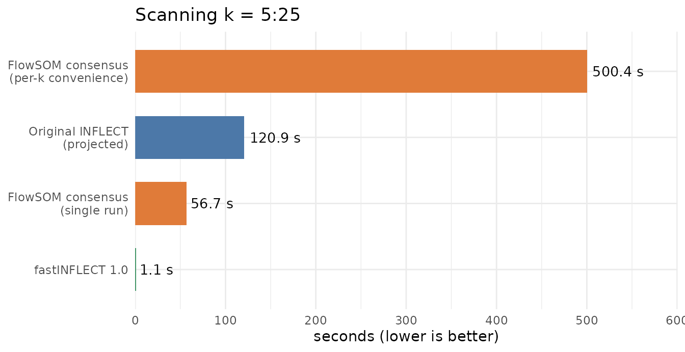
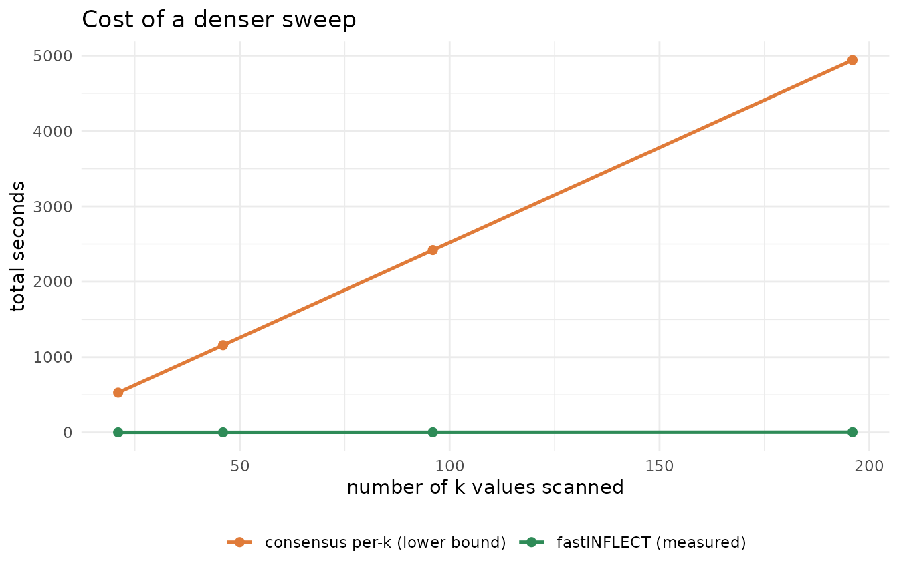
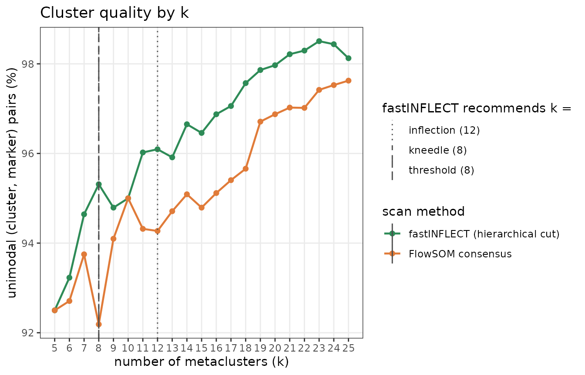
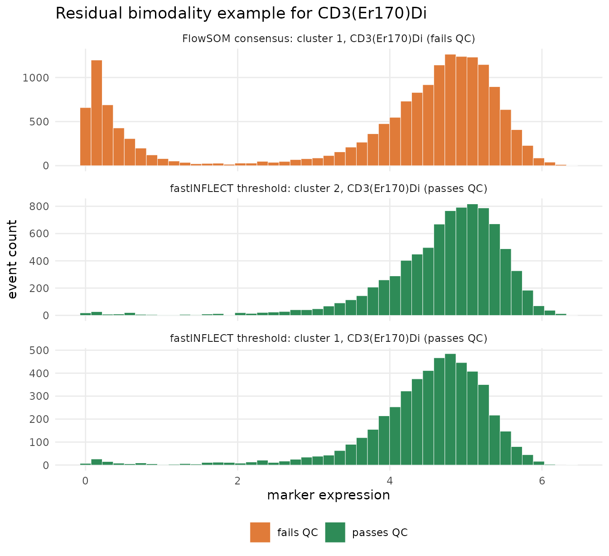

Benchmarking fastINFLECT against consensus metaclustering
Source:vignettes/benchmark-inflect-vs-consensus.Rmd
benchmark-inflect-vs-consensus.RmdThe task being benchmarked
Choosing the number of metaclusters k for a FlowSOM/SOM requires scanning a range of k and judging cluster quality at each. This vignette benchmarks three ways of doing that on the same SOM:
| Approach | How it scans k | How it chooses k |
|---|---|---|
| Original INFLECT | scores each k independently with the original FlowSOMQC() / dip.test() loop |
automatic inflection |
| FlowSOM consensus | run metaClustering_consensus() (ConsensusClusterPlus) once per k |
left to the user |
| fastINFLECT | one memoised sweep that cuts the SOM’s hierarchy and scores marker unimodality | automatic (inflection / kneedle / unimodality threshold) |
The data is the bundled downsampled Levine et al. (2015) CyTOF dataset: a FlowSOM object with 48-core timings on Linux, R version 4.5.1 (2025-06-13), fastINFLECT 1.0.0. Absolute times are machine-specific; the ratios are the point.
The methods are not doing the same statistics — consensus clustering builds a stability-based partition, while fastINFLECT cuts a Ward hierarchy and scores marker unimodality. The benchmark compares the end-to-end cost of scanning k to build a quality curve, which is the practical bottleneck, and highlights that fastINFLECT additionally returns a recommended k.
The scan patterns
library(fastINFLECT)
library(FlowSOM)
load(system.file("extdata", "Levine32sample.Rdata", package = "fastINFLECT"))
# fastINFLECT: one call scores every k and recommends one.
inflect_res <- INFLECT(dataset, set.i = 5:25, multicore = FALSE, zeroes.in = FALSE)
# Original INFLECT pattern: one FlowSOMQC-style score per k, using dip.test()
# inside every cluster-marker cell. The benchmark projects this cost from sampled
# original cells because a full old-engine run is intentionally slow.
ml <- iteration.metacluster(dataset, set.i = 5:25, multicore = FALSE)
legacy_qc <- lapply(5:25, function(k) {
FlowSOMQC(dataset, ml[[as.character(k)]], zeroes.in = FALSE, verbose = FALSE)
})
codes <- dataset$map$codes
# (a) Convenience pattern: one metaClustering_consensus() call per k. Each call
# runs a fresh ConsensusClusterPlus up to maxK = k, so work is repeated.
for (k in 5:25) mc_k <- metaClustering_consensus(codes, k = k, seed = 42)
# (b) Amortized: a single ConsensusClusterPlus run to maxK yields every k at once
# (this is what (a) slices internally). The fairest consensus baseline.
ccp <- ConsensusClusterPlus::ConsensusClusterPlus(t(codes), maxK = 25, seed = 42,
plot = NULL, verbose = FALSE)
# ... score ccp[[k]]$consensusClass for each k ...Runtime
Time to scan k = 5:25 (21 values) and obtain a quality score at every k. Both consensus variants produce identical partitions; only their cost differs. The original-INFLECT bar is a conservative projection from 168 sampled original dip.test() cluster-marker cells and excludes small metaclustering and curve-fit overhead.
rt <- data.frame(
method = c("fastINFLECT 1.0",
"Original INFLECT\n(projected)",
"FlowSOM consensus\n(single run)",
"FlowSOM consensus\n(per-k convenience)"),
seconds = c(cache$totals$inflect_scan_seconds,
cache$totals$legacy_inflect_scan_seconds,
cache$totals$amortized_seconds,
cache$totals$consensus_scan_seconds)
)
rt$method <- factor(rt$method, levels = rt$method[order(rt$seconds)])
rt$engine <- c("fastINFLECT 1.0", "Original INFLECT", "consensus", "consensus")
rt$engine <- factor(rt$engine,
levels = c("fastINFLECT 1.0", "Original INFLECT", "consensus"))
ggplot(rt, aes(x = seconds, y = method, fill = engine)) +
geom_col(width = 0.65, show.legend = FALSE) +
geom_text(aes(label = fmt_secs(seconds)), hjust = -0.1, size = 3.6) +
scale_fill_manual(values = c("fastINFLECT 1.0" = "#2E8B57",
"Original INFLECT" = "#4C78A8",
"consensus" = "#E07B39")) +
scale_x_continuous(expand = expansion(mult = c(0, 0.2))) +
labs(x = "seconds (lower is better)", y = NULL,
title = "Scanning k = 5:25") +
theme_minimal(base_size = 11)
Wall-clock to scan k = 5:25. fastINFLECT evaluates every distinct SOM-node subtree once and reuses it across all k. Original INFLECT is projected from sampled original dip.test cells. A single ConsensusClusterPlus run is the fair consensus baseline; calling metaClustering_consensus() per k repeats that work 21 times.
fastINFLECT scans the whole range in 1.1 s. The original INFLECT loop is projected at 120.9 s (108× slower). The fair consensus baseline — one ConsensusClusterPlus run — takes 56.7 s (51× slower), and the common per-k convenience pattern takes 500.4 s (447× slower). fastINFLECT is the cheapest and is the only one that also returns a recommended k.
Why the new engine is faster
The old scan repeats work whenever the same SOM-node subtree appears in different cuts of the hierarchy. fastINFLECT 1.0 evaluates each distinct subtree once, and then reassembles the per-k QC matrices from that cache.
eff <- cache$efficiency
eff_tbl <- data.frame(
Quantity = c("events", "SOM nodes", "markers",
"original cluster-marker tests",
"memoised subtree-marker tests",
"repeated work removed"),
Value = c(format(eff$n_events, big.mark = ","),
eff$n_nodes,
eff$n_markers,
format(eff$total_cluster_marker_tests_legacy, big.mark = ","),
format(eff$distinct_subtree_marker_tests_inflect, big.mark = ","),
fmt_x(eff$memoization_work_reduction)),
check.names = FALSE
)
knitr::kable(eff_tbl, align = c("l", "r"))| Quantity | Value |
|---|---|
| events | 32,288 |
| SOM nodes | 375 |
| markers | 32 |
| original cluster-marker tests | 10,080 |
| memoised subtree-marker tests | 1,440 |
| repeated work removed | 7× |
This work reduction is separate from the faster cell kernel: the original path uses diptest::dip.test() in every cluster-marker cell, while the new path uses diptest::dip() plus the same p-value table interpolation and small Rcpp accelerators. The default score remains matched to the legacy score; the speed gain comes from avoiding repeated cells and cheaper equivalent cell evaluation.
Scaling with sweep density
fastINFLECT memoises QC per distinct SOM-node subtree – and a nested (hierarchical) sweep has at most 2·nNodes distinct subtrees regardless of how many k you test – so its cost is nearly flat as the sweep gets denser. The per-k consensus pattern, by contrast, pays for another ConsensusClusterPlus run at every added k.
sc <- rbind(
data.frame(n_k = cache$scaling_df$n_k, seconds = cache$scaling_df$inflect_seconds,
method = "fastINFLECT (measured)"),
data.frame(n_k = cache$scaling_df$n_k, seconds = cache$scaling_df$consensus_seconds_projected,
method = "consensus per-k (lower bound)")
)
ggplot(sc, aes(x = n_k, y = seconds, colour = method)) +
geom_line(linewidth = 0.9) +
geom_point(size = 2) +
scale_colour_manual(values = c("fastINFLECT (measured)" = "#2E8B57",
"consensus per-k (lower bound)" = "#E07B39"),
name = NULL) +
labs(x = "number of k values scanned", y = "total seconds",
title = "Cost of a denser sweep") +
theme_minimal(base_size = 11) +
theme(legend.position = "bottom")
Total scan time versus the number of tested k. fastINFLECT is measured; the per-k consensus line is an optimistic lower bound (n_k times the median per-run cost measured on 5:25 – real cost is higher because each run’s cost grows with k).
Because dense sweeps are essentially free for fastINFLECT, the unimodality curve – and the knee/threshold read off it – can be resolved at every integer k rather than a sparse subset. (A single ConsensusClusterPlus run is also density-independent, but each such run costs far more than an entire fastINFLECT sweep.)
Cluster quality and the recommended k
Both methods can be scored on the same objective metric: the percentage of (cluster, marker) pairs that are unimodal (fastINFLECT’s QC). The vertical guides mark fastINFLECT’s three automatic recommendations.
sel <- cache$selection
guides <- sel[is.finite(sel$k), ]
ggplot(cache$comparison_df, aes(x = k, y = unimodality, colour = method)) +
geom_line(linewidth = 0.8) +
geom_point(size = 1.7) +
geom_vline(data = guides,
aes(xintercept = k, linetype = method),
colour = "grey30", show.legend = TRUE) +
scale_colour_manual(values = c("fastINFLECT (hierarchical cut)" = "#2E8B57",
"FlowSOM consensus" = "#E07B39"),
name = "scan method") +
scale_linetype_manual(values = c(inflection = "dotted", kneedle = "dashed",
threshold = "longdash"),
name = "fastINFLECT recommends k =",
labels = paste0(guides$method, " (", round(guides$k), ")")) +
scale_x_continuous(breaks = cache$k_range) +
labs(x = "number of metaclusters (k)", y = "unimodal (cluster, marker) pairs (%)",
title = "Cluster quality by k") +
theme_bw(base_size = 11) +
theme(legend.position = "right", panel.grid.minor = element_blank())
Unimodality (%) across k for each method. Dashed guides mark fastINFLECT’s inflection, kneedle, and unimodality-threshold recommendations.
sel <- cache$selection
uni_at <- function(k) {
d <- cache$comparison_df
d <- d[d$method == "fastINFLECT (hierarchical cut)", ]
hit <- d$unimodality[match(round(k), d$k)]
if (length(hit) == 0 || is.na(hit)) NA_real_ else round(hit, 1)
}
tbl <- data.frame(
Criterion = sel$method,
`Recommended k` = ifelse(is.na(sel$k), "—", as.character(round(sel$k))),
`Unimodality (%)` = vapply(sel$k, uni_at, numeric(1)),
check.names = FALSE
)
knitr::kable(tbl, align = c("l", "r", "r"))| Criterion | Recommended k | Unimodality (%) |
|---|---|---|
| inflection | 12 | 96.1 |
| kneedle | 8 | 95.3 |
| threshold | 8 | 95.3 |
The threshold criterion is the most directly interpretable for the goal of “admit no cluster with residual bimodal marker expression, without over-clustering”: it is the smallest k at which the target fraction (here 95%) of (cluster, marker) pairs are unimodal, and it is stable across the width of the sweep. The LL.4 inflection point, by contrast, depends on the fitted range.
Marker-expression histograms
The aggregate unimodality score is useful, but the package promise is local: clusters should not retain residual bimodal marker expression. The cache therefore selects a concrete example at the threshold k. It finds a FlowSOM consensus cluster-marker pair that fails the QC and shows overlapping fastINFLECT clusters for the same marker that pass.
hist_df <- cache$marker_histogram
hist_df$qc_label <- ifelse(hist_df$qc_pass, "passes QC", "fails QC")
hist_df$panel <- factor(hist_df$panel, levels = unique(hist_df$panel))
ggplot(hist_df, aes(x = expression, fill = qc_label)) +
geom_histogram(bins = 45, colour = "white", linewidth = 0.15) +
facet_wrap(~ panel, ncol = 1, scales = "free_y") +
scale_fill_manual(values = c("passes QC" = "#2E8B57", "fails QC" = "#E07B39"),
name = NULL) +
labs(x = "marker expression", y = "event count",
title = paste0("Residual bimodality example for ", unique(hist_df$marker))) +
theme_minimal(base_size = 11) +
theme(legend.position = "bottom",
panel.grid.minor = element_blank())
Marker-expression histograms at fastINFLECT’s threshold k. The selected FlowSOM consensus cluster retains residual bimodality for the marker shown; overlapping fastINFLECT clusters pass the same unimodality/spread QC.
mh <- cache$marker_histogram_summary
mh_tbl <- data.frame(
Method = mh$method,
Cluster = mh$cluster,
Marker = mh$marker,
`QC result` = ifelse(mh$qc_pass, "pass", "fail"),
`dip p-value` = signif(mh$dip_pvalue, 3),
IQR = round(mh$iqr, 2),
`events plotted` = mh$n_events,
check.names = FALSE
)
knitr::kable(mh_tbl, align = c("l", "r", "l", "l", "r", "r", "r"))| Method | Cluster | Marker | QC result | dip p-value | IQR | events plotted |
|---|---|---|---|---|---|---|
| FlowSOM consensus | 1 | CD3(Er170)Di | fail | 0.000 | 1.90 | 17218 |
| fastINFLECT threshold | 2 | CD3(Er170)Di | pass | 0.995 | 0.89 | 8515 |
| fastINFLECT threshold | 1 | CD3(Er170)Di | pass | 0.994 | 0.87 | 5001 |
In this selected example, the standard consensus cluster fails the marker unimodality check, while the overlapping fastINFLECT clusters pass with high dip-test p-values and narrower marker spread. This is the visual counterpart of the quality curve: fastINFLECT’s chosen k improves the actual marker distributions inside clusters, not only the summary score.
Conclusion
For the practical task of scanning k to choose a metaclustering, fastINFLECT is both much faster — about 108× faster than the original INFLECT loop in this cache, and 447× faster than the common per-k consensus pattern — and more decisive, returning an objective recommended k on the same unimodality metric used to judge every method. Consensus metaclustering remains a reasonable way to build a partition at a chosen k, but fastINFLECT is the cheaper and more informative way to choose that k.
cache$session_info
#> R version 4.5.1 (2025-06-13)
#> Platform: x86_64-conda-linux-gnu
#> Running under: Rocky Linux 8.10 (Green Obsidian)
#>
#> Matrix products: default
#> BLAS/LAPACK: /exports/archive/hg-funcgenom-research/mdmanurung/conda/envs/R4_51/lib/libopenblasp-r0.3.29.so; LAPACK version 3.12.0
#>
#> locale:
#> [1] LC_CTYPE=C.UTF-8 LC_NUMERIC=C LC_TIME=C.UTF-8
#> [4] LC_COLLATE=C.UTF-8 LC_MONETARY=C.UTF-8 LC_MESSAGES=C.UTF-8
#> [7] LC_PAPER=C.UTF-8 LC_NAME=C LC_ADDRESS=C
#> [10] LC_TELEPHONE=C LC_MEASUREMENT=C.UTF-8 LC_IDENTIFICATION=C
#>
#> time zone: Europe/Amsterdam
#> tzcode source: system (glibc)
#>
#> attached base packages:
#> [1] stats graphics grDevices utils datasets methods base
#>
#> other attached packages:
#> [1] fastINFLECT_1.0.0 testthat_3.3.2 FlowSOM_2.18.0 igraph_2.1.4
#>
#> loaded via a namespace (and not attached):
#> [1] gtable_0.3.6 ggplot2_4.0.3
#> [3] ConsensusClusterPlus_1.74.0 rstatix_0.7.3
#> [5] Biobase_2.70.0 lattice_0.22-9
#> [7] vctrs_0.7.3 tools_4.5.1
#> [9] generics_0.1.4 parallel_4.5.1
#> [11] stats4_4.5.1 sandwich_3.1-1
#> [13] tibble_3.3.0 cluster_2.1.8.2
#> [15] drc_3.0-1 pkgconfig_2.0.3
#> [17] Matrix_1.7-5 ggnewscale_0.5.2
#> [19] RColorBrewer_1.1-3 S7_0.2.2
#> [21] desc_1.4.3 S4Vectors_0.48.0
#> [23] lifecycle_1.0.5 stringr_1.6.0
#> [25] compiler_4.5.1 farver_2.1.2
#> [27] brio_1.1.5 ggforce_0.5.0
#> [29] codetools_0.2-20 carData_3.0-6
#> [31] flowCore_2.22.1 Formula_1.2-5
#> [33] pillar_1.11.1 car_3.1-5
#> [35] ggpubr_0.6.3 tidyr_1.3.1
#> [37] MASS_7.3-65 diptest_0.77-2
#> [39] abind_1.4-8 multcomp_1.4-30
#> [41] RProtoBufLib_2.22.0 gtools_3.9.5
#> [43] tidyselect_1.2.1 stringi_1.8.7
#> [45] mvtnorm_1.3-7 Rtsne_0.17
#> [47] reshape2_1.4.5 dplyr_1.1.4
#> [49] purrr_1.2.2 splines_4.5.1
#> [51] polyclip_1.10-7 rprojroot_2.1.1
#> [53] grid_4.5.1 cli_3.6.6
#> [55] magrittr_2.0.5 survival_3.8-6
#> [57] dichromat_2.0-0.1 XML_3.99-0.17
#> [59] pkgbuild_1.4.8 TH.data_1.1-5
#> [61] broom_1.0.12 withr_3.0.3
#> [63] scales_1.4.0 backports_1.5.1
#> [65] plotrix_3.8-14 matrixStats_1.5.0
#> [67] otel_0.2.0 ggsignif_0.6.4
#> [69] cytolib_2.22.0 zoo_1.8-15
#> [71] LearnGeom_1.5 rlang_1.2.0
#> [73] Rcpp_1.1.2 glue_1.8.1
#> [75] tweenr_2.0.3 BiocGenerics_0.56.0
#> [77] pkgload_1.5.2 plyr_1.8.9
#> [79] R6_2.6.1 colorRamps_2.3.4